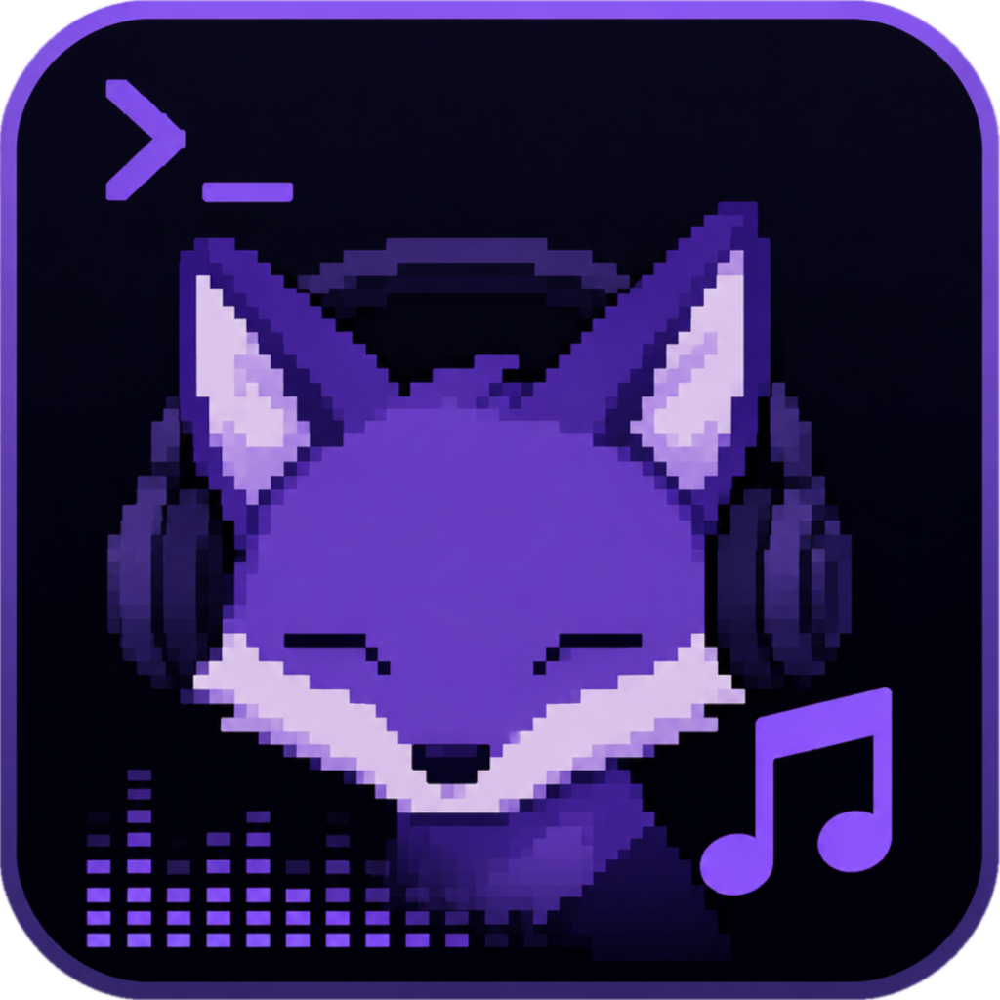

01 / SEARCH
多音源聚合
跨音源搜索、失败换源、歌手/专辑、歌单、分类与排行榜。

voicefoxVoiceFox 是一个键盘优先的终端音乐播放器：聚合多音源、歌词、本地音乐、下载、收藏、历史与歌单，让完整的音乐工作流留在你的 TUI 里。
稳定的 TUI 发布线持续打磨，同时保留 Flutter + Rust 的新架构实验线。
跨音源搜索、失败换源、歌手/专辑、歌单、分类与排行榜。
ReplayGain、EQ、A-B 循环、淡入淡出与键盘/鼠标队列管理。
LRC / KRC / QRC / YRC，支持翻译、罗马音与全屏歌词。
扫描、标签、封面、歌词、CUE 分轨与文件诊断。
并发分片、完整性校验，以及标签、封面、LRC 写入。
Linux D-Bus / MPRIS、Windows 通知，以及 Kitty / Sixel / iTerm2 封面。
搜索、播放、下载和本地管理保持同一套交互。
同时支持 lx-music 兼容的 JS 自定义音源，音源优先级可配置。
把播放器、音源、歌词、下载和本地库拆成清晰模块，同时为跨平台 GUI 保留 FFI 边界。
ratatui 负责界面，libmpv 负责播放；核心能力通过 Rust workspace 组织。
Flutter 前端实验线通过 flutter_rust_bridge 连接 Rust 能力，为桌面与移动端演进预留空间。
Linux / macOS 可以直接从源码构建；Windows 用户可使用 Releases 中已经打包好 libmpv 的版本。
git clone https://github.com/emoeem/voicefox.git
cd voicefox
cargo build --release开源、键盘优先、Rust 驱动。欢迎查看源码、Issue、Release 与开发文档。